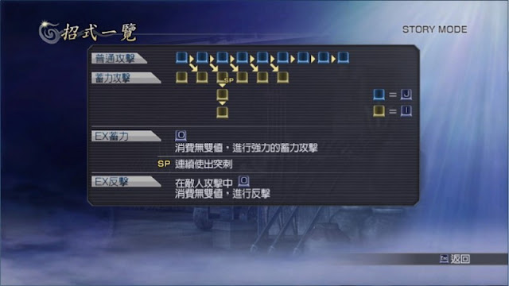

CHARGE
蓄力攻擊。因為在英文版裡，蓄力攻擊就是用這個單字。
C1～C6
C1＝直接按蓄力攻擊，C2＝普通→蓄力，C3＝普通→普通→蓄力，依此類推。以 C6 來講，就是第六段蓄力攻擊的意思，也就是在角色打了五下普通攻擊後，趕緊按蓄力攻擊，讓第六下以特別的攻擊方式打出。（還有 C7、C8，一樣依此類推，但不實用，原因是普通攻擊時間太長，且效果通常不比 C3、C4 好用，所以都當作沒看到，很少有人提及。）
EXC1～EXC6
技型的 C1～C6 可以把「蓄力攻擊」改用「類型招式」來按，這種打法的 C 技就用 EXC1～EXC6 來簡稱。
R1
類型招式，因為在 PS 手把要打類型招式就是按 R1。由於力、速、技不同類型的角色，類型招式用法不太一樣，所以為了方便表示類型招式，乾脆以按鈕通稱為 R1。
TA
類型招式。因為在英文版是以 Type Action 表示，所以簡稱 TA。換句話說，TA 跟 R1 是一樣的意思，不過 R1 對於全類型角色來說更為通用。
TA1
指速型角色的「技擊 1」，也就是速型角色的「類型招式」的第一種按法。按法是：「直接按類型招式」，所以其實跟 TA 是一樣的東西，只不過速型角色的 TA 有兩種按法，才將第一種稱為 TA1。
TA2
指速型角色的「技擊 2」，也就是速型角色的「類型招式」的第二種按法。按法是：「前進＋類型招式」。
ＳＰ技
技型角色專用的蓄力攻擊按法，如下圖蓄力攻擊有個地方被標示 SP，這地方改用類型招式來按，會變成「連續使出突刺」的效果。

每個技型角色不見得一樣，必須查詢招式一覽。
JC
JUMP + CHARGE 的簡稱，就是跳起來時按蓄力攻擊。
９方、８方、12方
9 方：普通攻擊可以連打 9 次，依此類推。
「方」是「方塊」的意思，因為在 PS 手把打普通攻擊是按 □ 鈕。
其他使用率不高的術語
EX-CHARGE
技型角色使用 C 技時，可以把「蓄力攻擊」改成「類型招式」來按，這種招式稱為 EX-CHARGE。
EX-SP
EX-CHARGE 中，其中有一招會標示 SP，表示有特殊效果，這一招稱為 EX-SP。
EX-COUNTER
技型角色被敵方攻擊的時候，按 R1 可以使出反擊，這種招式稱為 EX-COUNTER。
反擊
技型角色被敵方攻擊的時候，按 R1 可以使出反擊，讓敵人暫時無法動作。
受身
Quick standing，吹飛或著地前，抓住時機恢復戰鬥姿勢，防止角色無法動彈的操控技術。在格鬥遊戲受身是很重要的操控技術，以避免倒地的角色被追加攻擊，在無雙遊戲則用來避免被浮空攻擊。
硬直
被敵人弓箭打中，玩家角色會有短暫時間無法動彈的狀態，被稱作硬直。
GB
Guard break，崩解對手防禦的攻擊、甚至無視防禦的攻擊。
GI
Guard impact，攻擊者的招式被防守者給彈開後，反而露出破綻，成為適合防守者反擊的時機。